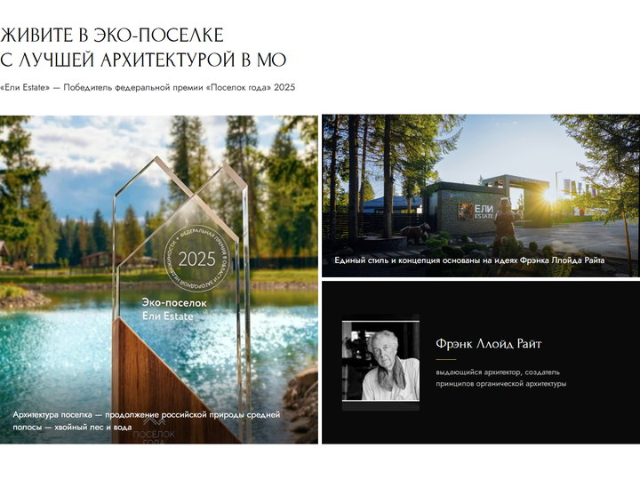
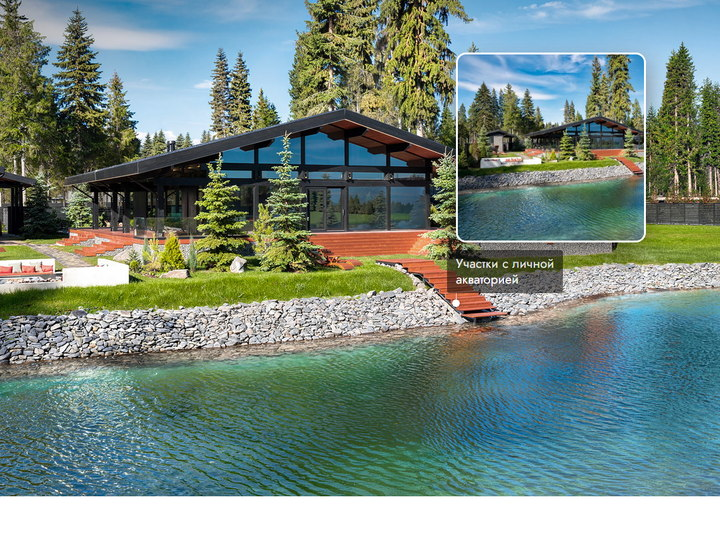
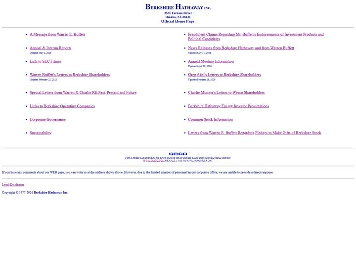
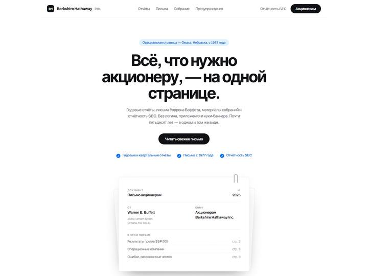
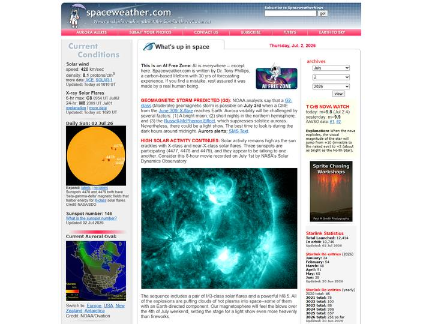
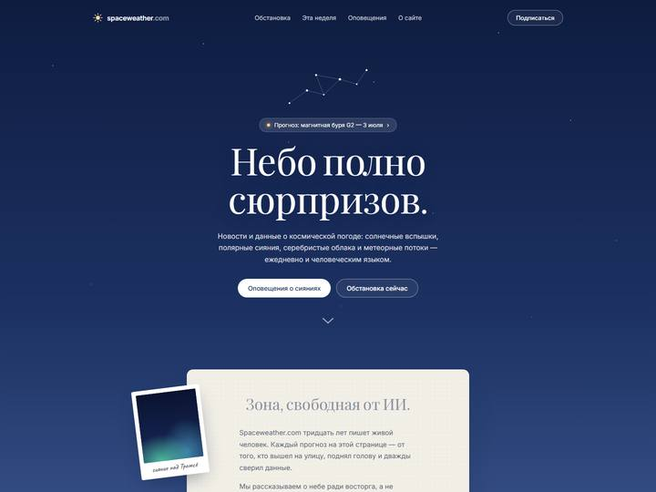
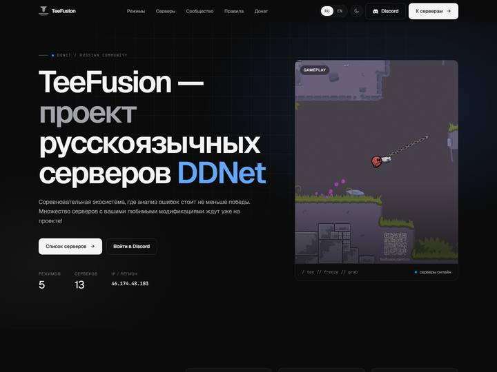
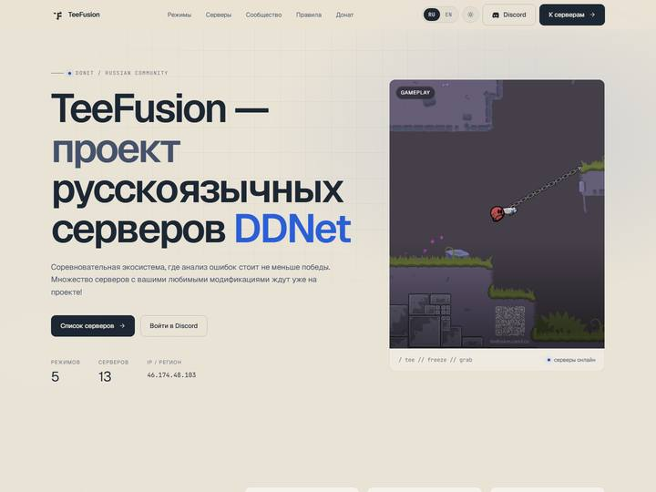

портфолио / web · открыт к заказам
Богдан Маслаков
Беру чужой фирменный стиль и попадаю в него пиксель в пиксель — или собираю свой с нуля. Показываю не картинки, а живые свёрстанные страницы: каждую можно открыть, покликать и посмотреть с телефона. Правки вношу за минуты, а не за созвон.
Ели Estate оплаченное тестовое
Блок лендинга премиального эко-посёлка в Подмосковье. Точное попадание в утверждённый фирменный стиль: антиква Forum, гротеск Jost, фирменные кнопки-метки с точкой и линией. Подписи на фото интерактивные — наведение раскрывает фотографию объекта. Все фото настоящие, из архива посёлка.


Berkshire Hathaway редизайн-концепт
Сайт компании Уоррена Баффета, застрявший в 1998-м, — в современной швейцарской манере: бумажные документы, строгий гротеск, пастельные акценты. Ни один раздел оригинала не потерян.


Spaceweather.com редизайн-концепт
Научный портал из нулевых — в «мечтательной» редакторской манере: градиент ночного неба, антиква, письмо редактора на бумаге и полароиды. Все цифры и факты — настоящие, из оригинала.


TeeFusion работа на заказ · RU/EN
Действующий сайт игрового сообщества DDNet: тёмная и светлая темы, два языка, интерактивный список серверов с копированием IP — всё работает, можно потыкать.

